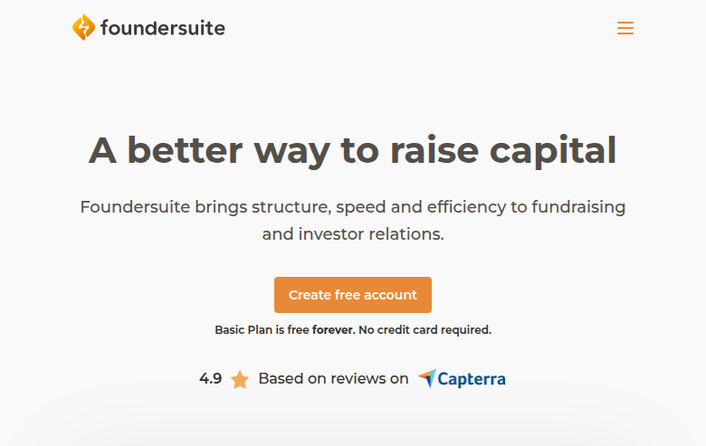
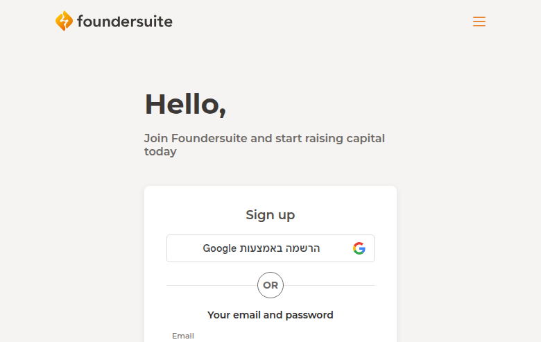
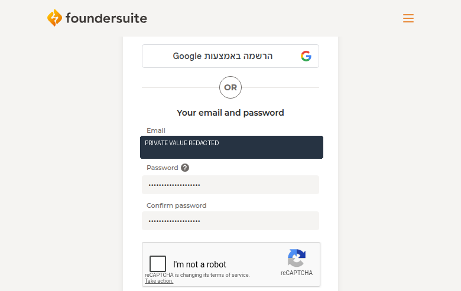

Profile
- Company
- Foundersuite
- Url
- https://foundersuite.com/
- Source Category
- Capital & discovery marketplaces
- Research Status
- Deep Cited Research / Draft Complete
- Current Status
- live - active fundraising software with free account CTA and current public homepage.
- Founded Launch Year
- 2016 flagship Investor CRM launch
- Company Age
- 10 years
- Hq Country
- US (not verified on official page checked)
- Operating Area
- Global startups/investors/accelerators/intermediaries
- Target Users
- Startups raising capital, investors, accelerators, intermediaries managing fundraising and investor relations
- Product Category
- founder-investor / capital; fundraising CRM; investor database; pitch deck hosting; data room; deal docs
Product Flows
- Swipe Card Interface
- no
- Mutual Match
- no
- Ai Matching Scoring
- not found
- Ai Deck Scoring
- not found
- Founder To Founder Flow
- no
- Founder To Investor Flow
- yes - investor database, CRM, warm intros, deck tracking
- Project Profiles
- yes - CRM/deck/data-room/update records
- Messaging Collaboration
- yes - updates, emails, CRM, Get Intro
- Mobile App
- not found
- Web App
- yes
Security & Documents
- Nda Gated Unlock
- not found
- Data Room
- yes
- E Signature
- yes - Deal Docs/closing workflow
- Meeting Prep Ai Briefing
- not found
Pricing, Funding & Traction
- Pricing Model
- freemium and annual SaaS: Basic $0, Silver $745/year, Gold $1069/year, Platinum $1609/year; data room add-on fee
- Business Model
- SaaS subscriptions for fundraising workflow and investor database access
- Total Funding
- not found in official checked page
- Funding Rounds
- not found
- Investors
- not found
- Funding Source Type
- SaaS subscriptions
- Last Funding Date
- not found
- Users Traction
- 100,000+ startups/VCs/accelerators/advisors/bankers; investor database listed as 227,000 global investors on pricing page
- Deals Funding Facilitated
- Foundersuite says customers have raised $21B
- Partnerships
- not found
- Media Coverage
- G2 rating 4.9 shown on homepage; no media coverage captured.
- Product Update Activity
- active public pricing/about pages; current pricing includes AI email generation; specific dated changelog not found
- Acquisition Rebrand History
- not found
Scores
- Product Overlap Score
- 5
- Feature Maturity Score
- 3
- Market Traction Score
- 3
- Funding Strength Score
- 3
- Ai Depth Score
- 3
- Nda Security Strength Score
- 4
- Network Moat Score
- 3
- Direct Threat Score
- 3.6
- Source Confidence
- High for product/pricing/traction; Medium for funding unavailable
Evidence Notes
- Primary Sources
- https://foundersuite.com/about_us
https://foundersuite.com/pricing
https://blog.foundersuite.com/guide-to-using-the-investor-database/ - Secondary Sources
- https://www.linkedin.com/company/foundersuite
https://www.capterra.com/p/144844/Foundersuite/ - Unsupported Claims
- Founding year/HQ require secondary verification.
- Contradictions
- Investor database count differs by page/source: pricing says 227,000 global investors, pricing key-takeaways says 216,000, LinkedIn says 187,000, Capterra says 230,000+.
- Last Checked
- 2026-07-19
- Notes
- High overlap in fundraising CRM, investor discovery, deck tracking, data room and deal-doc workflows.
Registration Flow
Research date: 2026-07-19. Screenshots are sanitized and omit any credentials or tokens.
Outcome: no account created. The form was reached and filled with test data, but submission stopped at reCAPTCHA.
Stop point: reCAPTCHA / anti-automation checkpoint after the registration form step.
- Opened Foundersuite's public homepage and selected the account registration path.
- Reached the registration form and entered sanitized test details for the research account.
- Submitted to the next step and stopped at the reCAPTCHA boundary; no verified account was created.


